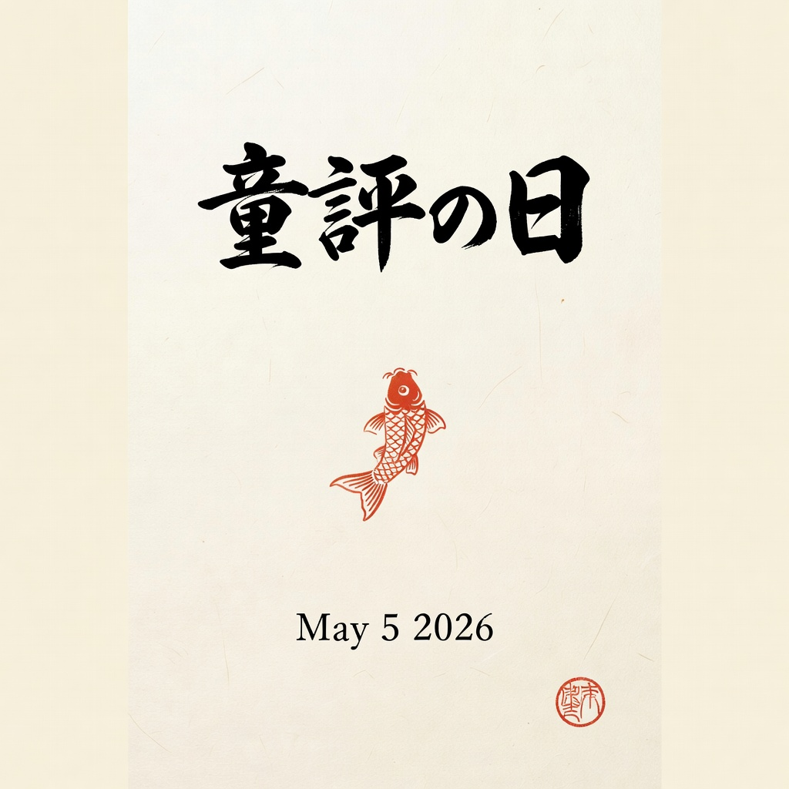
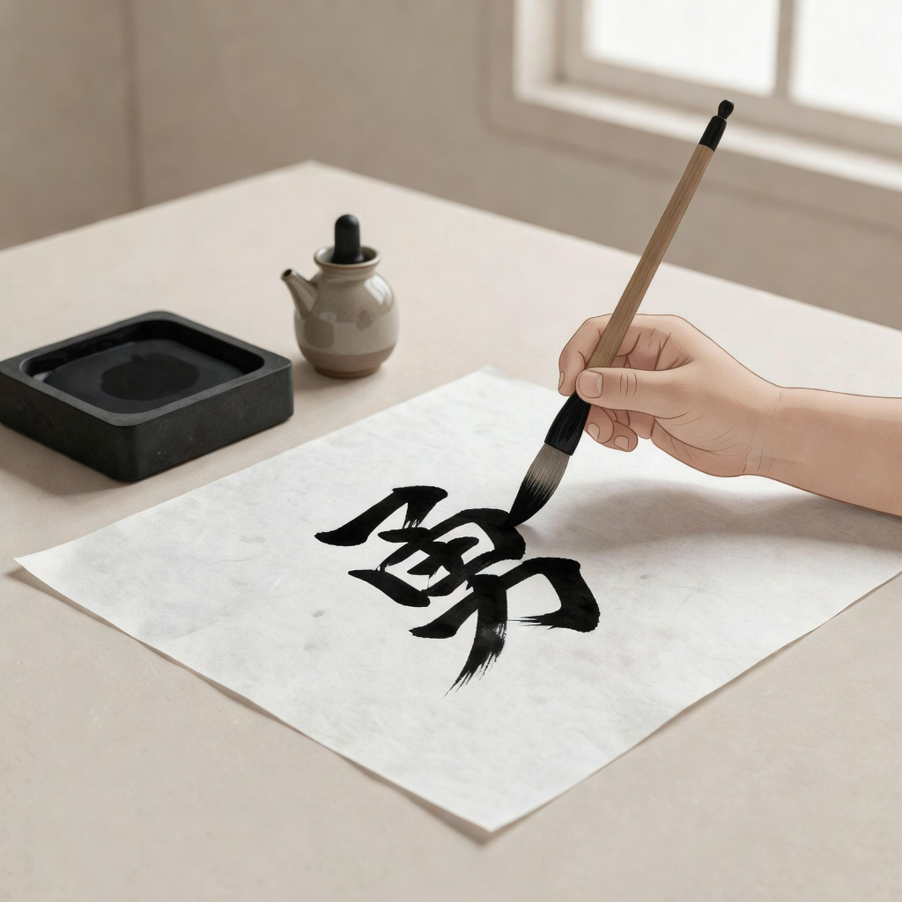
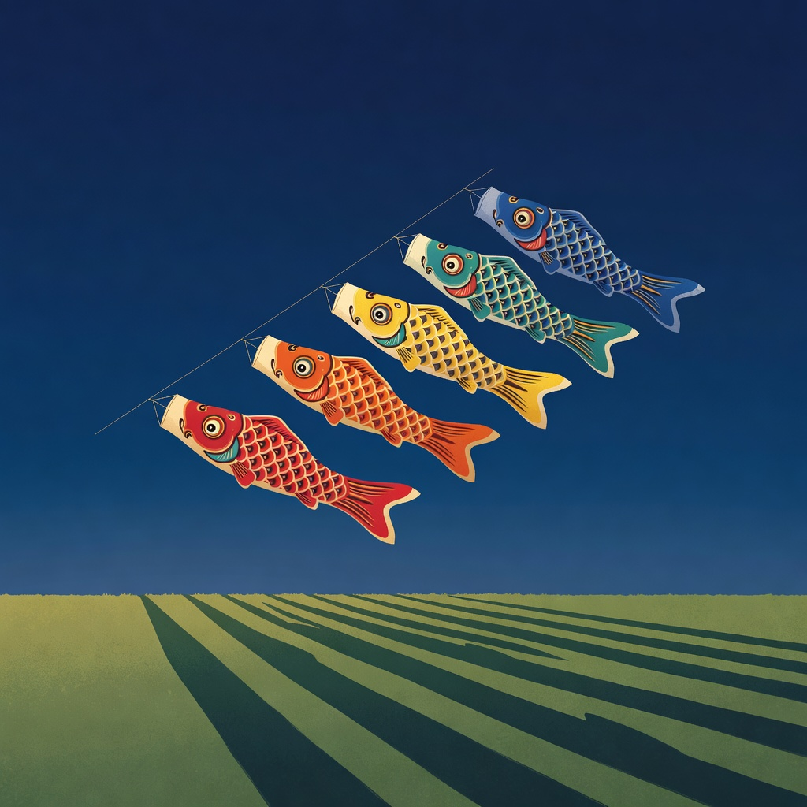
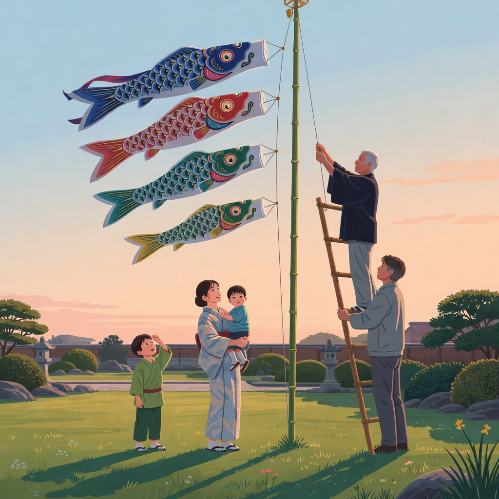
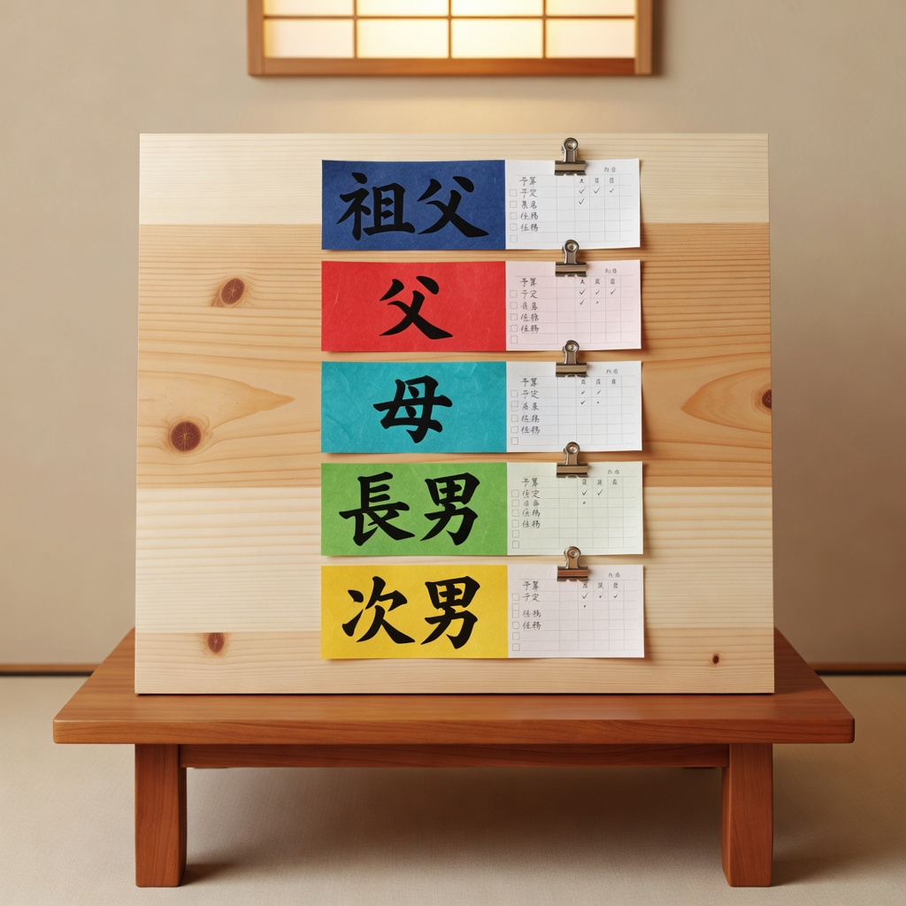
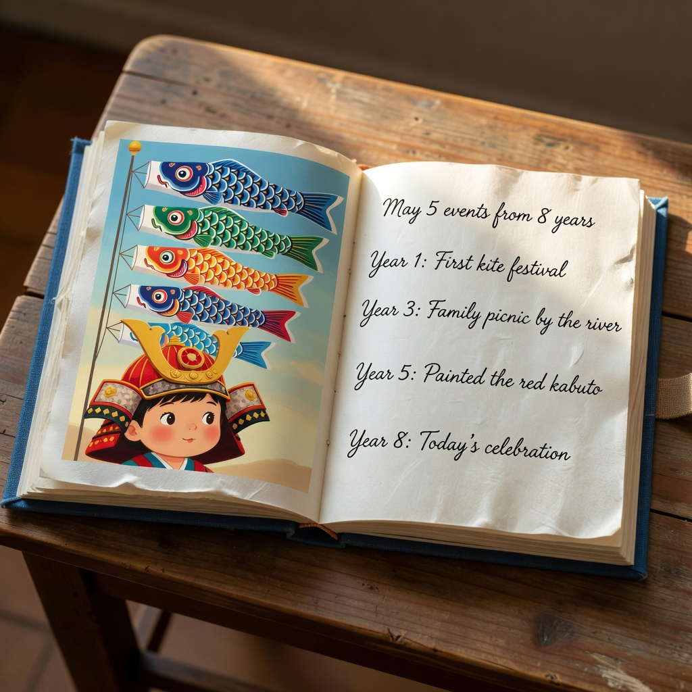
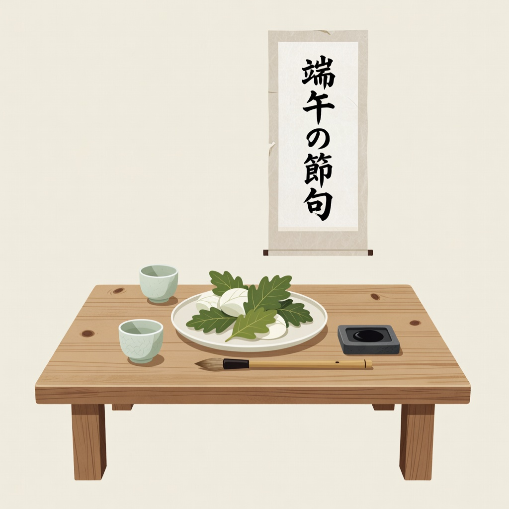
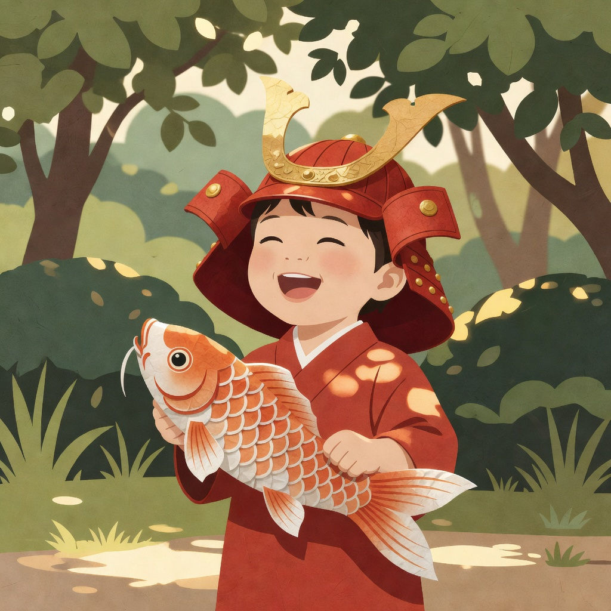

Grandfather The anchor
The black indigo streamer — the family's quiet foundation. We surface everything grandfather needs: the prayer list, the carp-cake recipe he's held since '84, and the seat at the head of the table.
Kogyo is the planning companion for Children's Day. Five streamers, five roles, one ascent — we help your family raise them together, send the right invitations, set the table, and remember the morning for years.

In every set of koinobori, each streamer represents a family member. Kogyo turns that tradition into the planning surface — so every role has its place, gift, and moment in the day.
The black indigo streamer — the family's quiet foundation. We surface everything grandfather needs: the prayer list, the carp-cake recipe he's held since '84, and the seat at the head of the table.
The vermilion streamer — the one who climbs the ladder. Pole height, rope tension, the right tree: Kogyo walks father through the hoist so the bamboo never touches the gutter.
The deep-teal streamer — the steady center. Guest list, menu planning, dietary flags, the calligraphy cards. Mother's timeline becomes the day-of checklist.
The spring-green streamer — the one the carp's eye watches. Age-appropriate rituals, the children's calligraphy corner, and a memory book that grows with them every May.
The mustard-gold streamer — the new wind. First-day-of-May photos, the kabuto helmet fitting, and a small gift registry so the family gives with intention.
Three surfaces — plan, send, remember — wired into a single shared timeline so every role knows where they stand.
A shared schedule anchored to dawn. The carp rise at sunrise; breakfast is at 8; guests arrive at 10. Every member of the family gets a slice of the day in the language they understand — to-do, ritual, or both.

Printable, postable, sendable. Each invite carries the family's name and the date in vertical kanji-friendly layout, with RSVP that updates the headcount in real time. No PDF template graveyard.

Kogyo saves the year's celebration as a printed keepsake — every photo, every role, every guest. The eldest's height next to the streamer pole. The kabuto helmet on the second child. The grandfather's prayer.

An hour-by-hour schedule tailored to your family's roster — auto-generated from your plan, sent to every role the morning of.
Real celebrations planned on Kogyo this May — shared with the families' permission.




Plan one celebration free, every year. Keep the archive forever.
For one family, one May 5. The plan, the timeline, the printable invite. Archive at the end of the year, forever free.
Plan every festival your family celebrates — Children's Day, Obon, the equinoxes, the new year. One subscription, every ritual.
For neighborhood associations, schools, and temples that plan dozens of celebrations a year. Cooperative accounts, shared archives, invoiced annually.
The carp does not rise because the river is calm. It rises because the current runs the other way.
— Kogyo, on couragePlan the streamer pole, the table, the guests, and the memory book — in the time it takes to brew the morning tea.